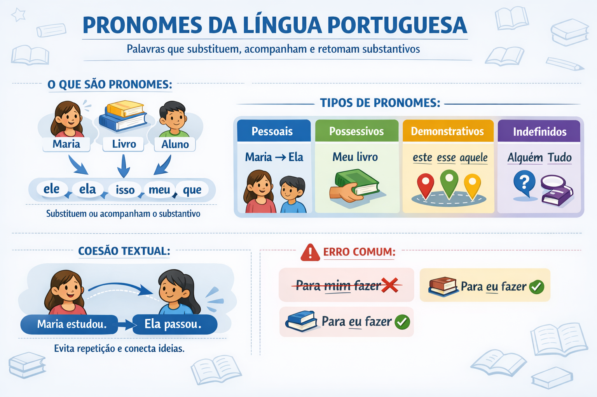

Pronomes da Língua Portuguesa: tipos, classificações, usos e exemplos explicados de forma simples
Os pronomes da Língua Portuguesa são palavras que substituem, acompanham ou retomam os substantivos, evitando repetições desnecessárias e garantindo coesão, clareza e fluidez textual. Eles também indicam as pessoas do discurso e estabelecem relações importantes entre as ideias do texto.
O que são pronomes
Os pronomes são palavras variáveis que podem substituir ou acompanhar o substantivo, indicando pessoas do discurso ou retomando termos já mencionados no texto.
- Substituem o substantivo: Ana chegou cedo. Ela estava animada.
- Acompanham o substantivo: Meu caderno está na mochila.
- Retomam ideias anteriores: O aluno estudou. Isso garantiu a aprovação.
Classificação dos pronomes
Os pronomes são classificados de acordo com sua função e sentido no discurso.
- Pronomes pessoais
- Pronomes possessivos
- Pronomes demonstrativos
- Pronomes indefinidos
- Pronomes relativos
- Pronomes interrogativos
- Pronomes de tratamento
Pronomes pessoais
Os pronomes pessoais indicam as pessoas do discurso e se dividem em pronomes do caso reto e do caso oblíquo.
Pronomes pessoais do caso reto
| Pessoa | Singular | Plural |
|---|---|---|
| 1ª | eu | nós |
| 2ª | tu | vós |
| 3ª | ele / ela | eles / elas |
Esses pronomes exercem, geralmente, a função de sujeito da oração.
Pronomes pessoais do caso oblíquo
Os pronomes oblíquos atuam como objeto ou complemento verbal e podem ser átonos ou tônicos.
- Átonos: me, te, se, o, a, lhe, nos, vos, os, as, lhes.
- Tônicos: mim, comigo, ti, contigo, ele, ela, nós, vós, eles, elas.
- O professor me explicou a matéria.
- Isso depende de mim.
Pronomes possessivos
Os pronomes possessivos indicam relação de posse, pertencimento ou proximidade entre as pessoas do discurso.
- meu, minha, meus, minhas
- teu, tua, teus, tuas
- seu, sua, seus, suas
- nosso, nossa, nossos, nossas
- vosso, vossa, vossos, vossas
Para evitar ambiguidade, é recomendável substituir seu por dele ou dela quando necessário.
Pronomes demonstrativos
Os pronomes demonstrativos indicam a posição de algo no espaço, no tempo ou no texto.
- este, esta, isto → perto de quem fala.
- esse, essa, isso → perto de quem ouve.
- aquele, aquela, aquilo → distante de ambos.
Pronomes indefinidos
Os pronomes indefinidos referem-se a pessoas ou coisas de forma vaga ou imprecisa.
- alguém, ninguém, tudo, nada
- algo, muito, pouco, vários
- cada, qualquer, certo
Pronomes relativos
Os pronomes relativos retomam um termo anterior (antecedente) e introduzem uma oração subordinada adjetiva.
- que, quem, qual, quais
- cujo, cuja
- onde
Exemplo: O livro que comprei é interessante.
Pronomes interrogativos
Os pronomes interrogativos são usados para formular perguntas diretas ou indiretas.
- quem, que, qual, quais
- quanto, quantos, quanta, quantas
Pronomes de tratamento
Os pronomes de tratamento indicam grau de formalidade e exigem verbo na terceira pessoa.
- você
- senhor / senhora
- Vossa Excelência
- Vossa Senhoria
Importância dos pronomes na coesão textual
Os pronomes são fundamentais para a coesão textual, pois evitam repetições e conectam ideias ao longo do texto.
- Maria estudou bastante. Ela foi aprovada.
Erros comuns no uso dos pronomes
- Uso de mim como sujeito: *para mim fazer.
- Ambiguidade com seu/sua.
- Colocação inadequada de pronomes oblíquos.
Resumo
Os pronomes da Língua Portuguesa são essenciais para a construção de textos claros, coesos e bem estruturados. Conhecer suas classificações e usos corretos contribui diretamente para a melhoria da escrita e da interpretação textual.
Explore Outros Conteúdos
Continue seus estudos acessando outras seções do site Mestre Kira: